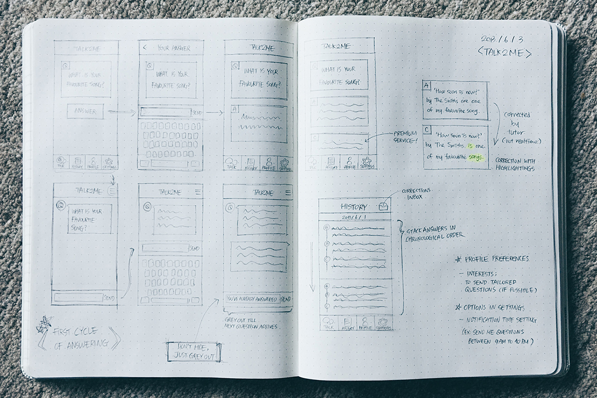

Talk2Me는 틀에 박히지 않으면서도 충분히 교육적인 외국어 학습을 원하는 사람들을 위한 인터랙티브 모바일 어학 서비스입니다.
본 프로젝트에서는 모바일 앱 인터페이스 디자인뿐만 아니라 서비스 개발 초기 단계에서의 컨셉 발굴에도 참여했으며 컨셉 디벨롭 및 기획 전반을 담당했습니다.


Talk2Me는 모바일 어학 서비스를 개발하는 스타트업 Qualson의 신규 서비스 개발 프로젝트로 시작되었습니다. 회사의 기존 서비스가 갖고 있던 한계점을 극복하고 사용자들로 하여금 자투리 시간을 어학에 활용할 수 있도록 하는 것을 목표로 진행된 프로젝트입니다.
메신저처럼 친숙한 인터페이스
답변 과정을 단순화하고 사용자들이 느끼는 부담을 줄입니다.
두 시간마다 바뀌는 컨텐츠
각 질문을 '시간 한정 컨텐츠'로 만들어 사용자들의 참여율을 높입니다.
쉽고 간편한 복습
첨삭된 부분을 하이라이트 표시하고 사용자가 답했던 내용들을 모아서 보여줍니다.
Talk2Me 앱은 1) 현재 시간대의 질문을 보여주는 Talk 탭, 2) 과거에 답했던 질문과 답변 내용을 모아서 보여주는 히스토리 탭, 3) 사용자 정보를 설정하는 프로필 탭, 4) 푸시 알림 설정 등 기타 기능을 모은 더 보기 탭, 이렇게 총 네 개의 탭으로 이루어져 있습니다. 사용자들은 첫 번째 탭에서 현재 시간대의 질문을 확인하고 바로 답변 화면으로 넘어갈 수 있습니다. 히스토리 탭은 지난 질문과 답변, 첨삭을 모아보며 복습할 수 있게 만들었습니다.
